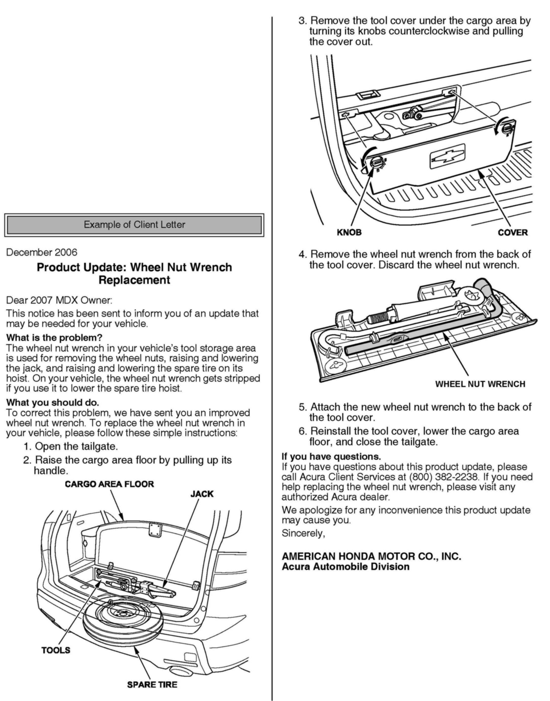
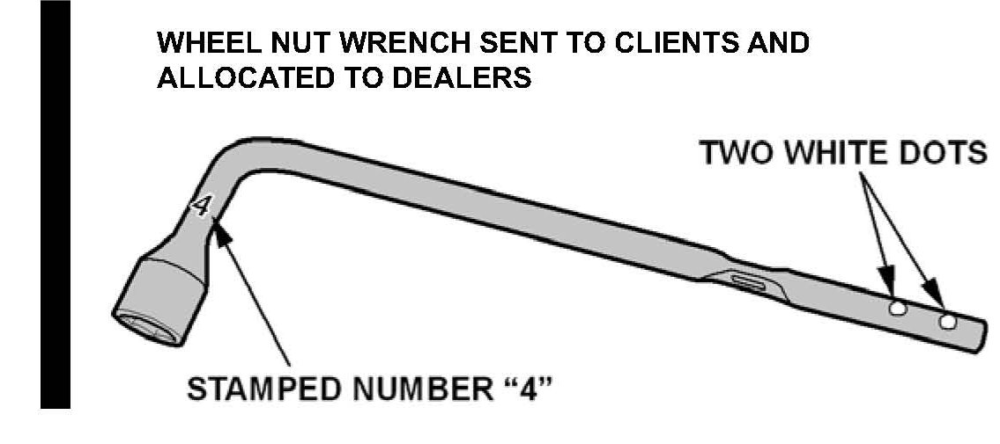
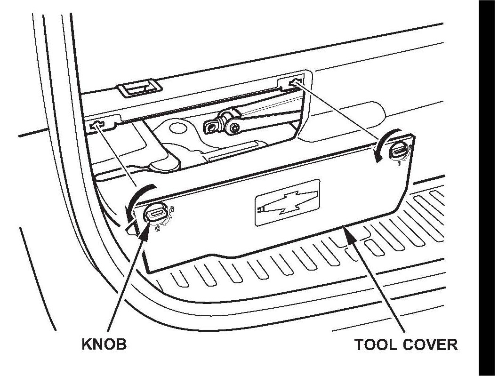
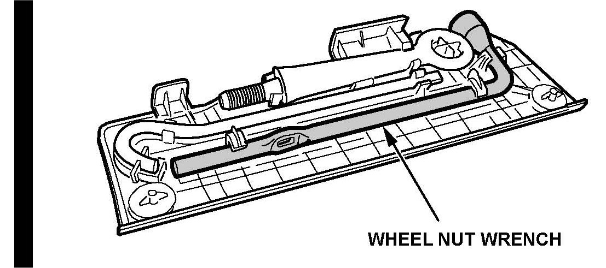

Campaign - Wheel Nut Wrench Replacement
06-054September 17, 2008
Applies To:
2007 MDX - From VIN 2HNYD2...7H500001 thru 2HNYD2...7H508230
Product Update: Wheel Nut Wrench Replacement
(Supersedes 06-054, dated December 9, 2006, to update the information marked by the black bars and asterisks)
BACKGROUND
American Honda is announcing a product update campaign to replace the wheel nut wrench on certain 2007 MDXs.
The wheel nut socket on the wheel nut wrench has an internal, 5-point socket in its center to raise and lower the spare tire hoist shaft. On affected vehicles, the 5-point socket is easily stripped, making it unable to raise or lower the spare tire.
CLIENT NOTIFICATION

All owners of affected vehicles were mailed a notification of this product update, along with a new wheel nut wrench. An example of the client notification is at the end of this service bulletin.
In the notification, clients are asked to remove the wheel nut wrench from the cargo area, discard it, then install the new wheel nut wrench.
Before beginning work on a vehicle, verify its eligibility
by checking at least one of these items:
^ The client has a notification letter.
^ The vehicle is shown as eligible on a VIN status inquiry.
CORRECTIVE ACTION
Replace the wheel nut wrench, if needed.
PARTS INFORMATION
Wheel Nut Wrench: P/N 89211-STX-A01

*NOTE:
The new wheel nut wrenches mailed to clients and those allocated to dealers (for affected vehicles in inventory) can be identified by two white dots near the handle and/or a 4" stamped near the wheel nut socket. New wheel nut wrenches in stock do not have the white dots or the number 4 stamped into them.*
WARRANTY CLAIM INFORMATION
Operation Number: 4125A9
Flat Rate Time: 0.2 hour
Failed Part: P/N 89211-STX-A01
Defect Code: 5MX00
Symptom Code: Q2800
Skill Level: Maintenance Technician
REPAIR PROCEDURE
*1. Do a VIN status inquiry to see if the wheel nut wrench needs to be replaced:
^ If the wheel nut wrench needs to be replaced, go to step 2.
^ If the wheel nut wrench was already replaced, no other action is needed.
2. Raise the cargo area floor.

3. Remove the tool cover under the driver's side of the cargo area floor.
4. Check the wheel nut wrench:
^ If the wrench does not have two white dots near its handle and/or a 4" stamped near its socket, go to step 5.
^ If the wrench has two white dots near its handle and/or a 4" stamped near its wheel nut socket, it has already been replaced. Go to step 7.
5. Remove the wheel nut wrench from the back of the tool cover.

6. Attach a new wheel nut wrench to the back of the tool cover.
7. Reinstall the tool cover, and lower the cargo area floor.*

Disclaimer